See a short demo on how to create a report in your Oro application, or continue reading the step-by-step guidance below.
To create a custom report:
The following fields are mandatory and must be defined for a report:
| Field | Description |
|---|---|
| Name | A name that is used to refer to the report on the interface. It is recommended to create a name that indicates the information the report presents. |
| Entity | A target entity of the report. Its data will be used to generate the report. Select one of the entities from the list. (You can also start typing the entity name in the text field to narrow down your entity choices.) |
| Report Type | Select Table from the list. The report will present the data in the form of the table. Currently, this is the only available type. |
| Owner | Select the user who can manage this report and be responsible for it. |
The only optional system field is Description. It can be used to save additional information about the report.
In the Designer section, you can define the structure of your report.
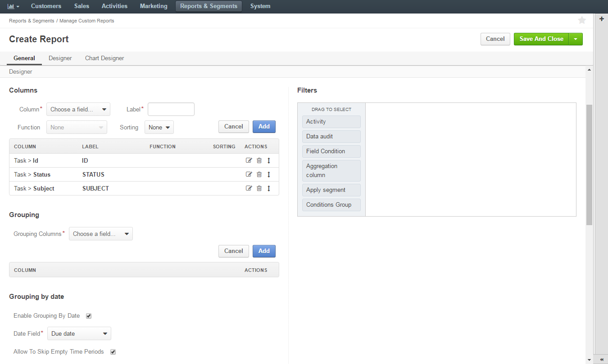There are four main subsections that help you build your report:
To add a column:
| Field | Description | ||||||||||||||||||||||||||||
|---|---|---|---|---|---|---|---|---|---|---|---|---|---|---|---|---|---|---|---|---|---|---|---|---|---|---|---|---|---|
| Column | Select the field that contains the required values. The column must be related to the information specified in the Entity field of the General section. You can see the available fields in the list, where fields are grouped by entities. |
||||||||||||||||||||||||||||
| Label | If required, you can rename the label of the selected field. This custom name will be applicable only to the current report. By default, the field label is used. |
||||||||||||||||||||||||||||
| Function | Select a function that you want to apply to the field values. The function processes a set of values and displays the requested information. For example, you want a report that shows the number of opportunities with each of the statuses Open, Closed Won and Closed Lost. Then, you can create a report with target entity Opportunity. For the opportunity’s columns, add Status and Id. For the Id field, specify the Count function. 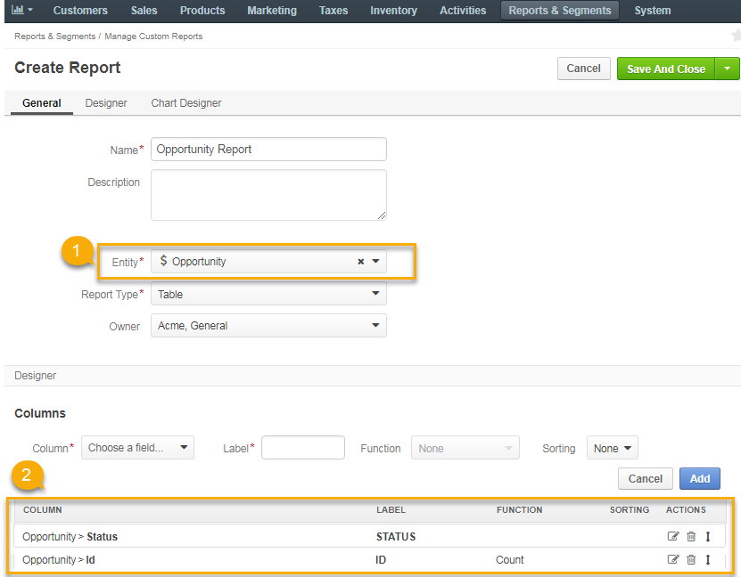As the result, the system takes the first of the statuses and counts how many Ids are listed under it, and the same for other statuses. 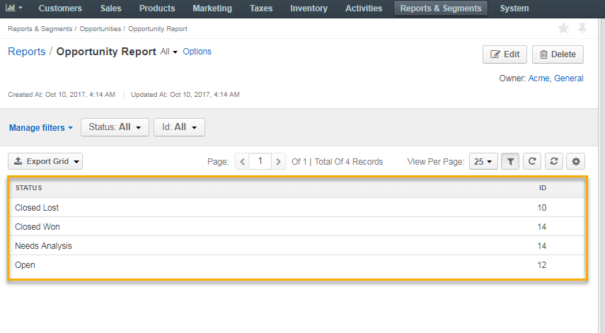There are some field-specific functions (e.g. Won Count that shows the number of won opportunities) for the opportunity’s Status field. The most common functions are the following:
Note You can see only the functions available for the selected field. For example, Sum is applicable only to numeric fields. Important When you specify a function for any column, all other columns must be added to the Grouping section of your report. |
||||||||||||||||||||||||||||
| Sorting | Select the sorting order for the field.
Important If sorting is defined for several columns, the report is sorted according to the order specified for the first column, and then, if multiple values of other columns correspond to any value of a first column, they will be sorted according to the order defined for the next columns. Let us display the following table. Unsorted:
For example, the Asc sorting is defined for the first column and Desc—for the second: Sorted:
After the report has been generated, it can be sorted by any of its columns. |
The field you have defined will appear in the COLUMN table.
To edit a column:
To delete a column:
To move a column, click the Move icon to the right of the corresponding row, hold the mouse button, and drag the column up (to make it appear earlier in the report) or down (to make it appear later).
When you specify a function for some of the fields, you need to add all other fields (that do not have any function specified for them) to the Grouping section.
To add a field to the Grouping section, select it from the Grouping Columns field, and click Add. For example, you can see a total, average, maximum, and minimum budget amount for each opportunity with the same status.
Warning
Do not add fields that are not present in the Columns section.
To remove a field from the Grouping section:
In this section, you can define whether to show additional period filters for this report on the report view page.
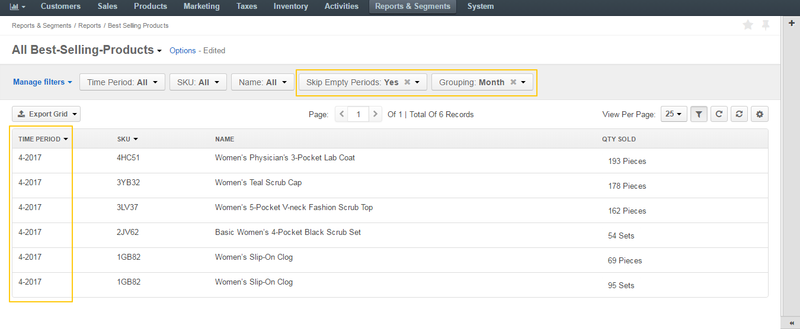With these filters, you can define the date range to filter the report data and group the data in this range by periods (days, month, quarters, years). You can also decide whether to show or not the periods that do not contain any data.
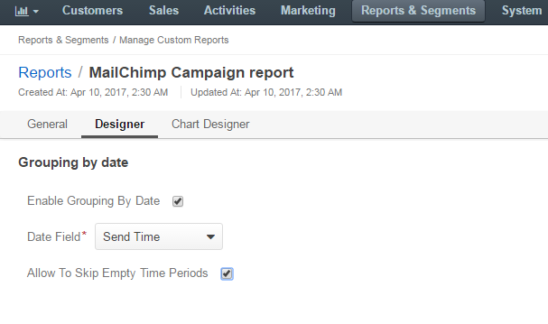| Field | Description |
|---|---|
| Enable Grouping by Date | Select this check box to enable additional date filters. |
| Date Field | Select the date field which will be used for grouping. Only the date fields related to the selected entity are available. |
| Allow to Skip Empty Time Periods | Select/deselect this check box to show/hide the periods that do not contain any data. |
OroCommerce supports line charts. To create a line chart for the report, define the following fields (all the fields are mandatory) in the Chart section.
| Field | Description |
|---|---|
| Chart Type | Currently only the Line Chart option is available |
| Category (X Axis) | Select the fields with the values which will form the X Axis of the report chart |
| Value (Y Axis) | Choose the fields with the values which will form the Y Axis of the report chart |
For more details, see the chart example.
In the main menu, navigate to Report & Segments > Manage Reports, and in the custom reports list, click the required report.
Alternatively, hover over the More Options menu and click the View icon.
In the main menu, navigate to Report & Segments. Custom reports are gathered in sections by the name of the field they are related to. Select the required section, navigated further to the desired report, and click it.
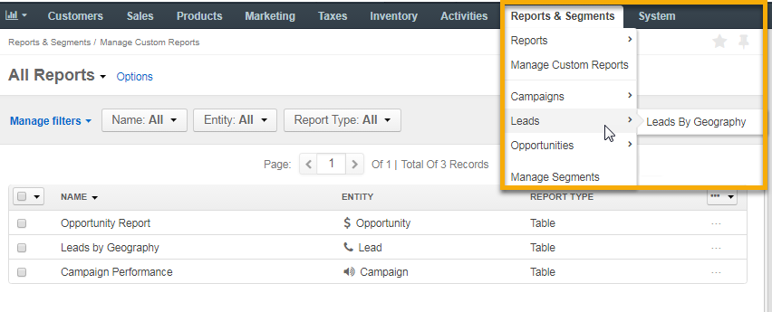Open the report that you want to export:
On the report page, click the Export Grid button in the upper-left corner, and then click CSV or XLSX to export the report to the file of the corresponding format.
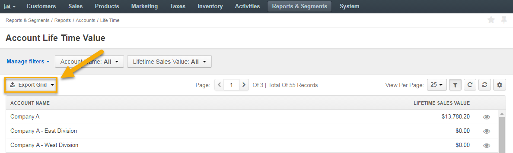In the main menu, navigate to Report & Segments > Manage Reports.
On the All Reports page, hover over the More Options menu, and then click the Edit icon.
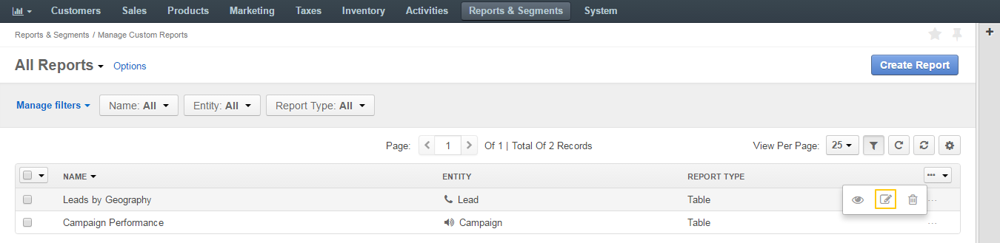Update the report details as required. For the description of the fields, see Create a Custom Report.
Click Save.
In the main menu, navigate to Report & Segments > Manage Reports.
On the All Reports page, click the required report.
Alternatively, hover over the More Options menu, and then click the View icon.
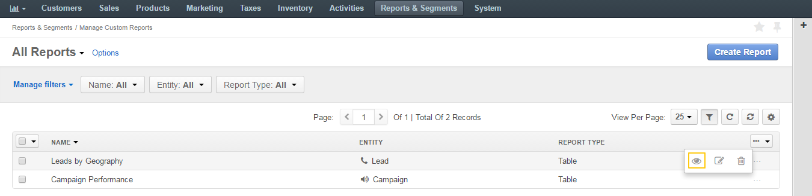On the report page, click Edit in the upper-right corner.
Update the report details as required. For the description of the fields, see Create a Custom Report.
Click Save.
In the main menu, navigate to Report & Segments > Manage Reports.
On the custom reports page, select the report to delete, hover over the More Options menu, and then click Delete.
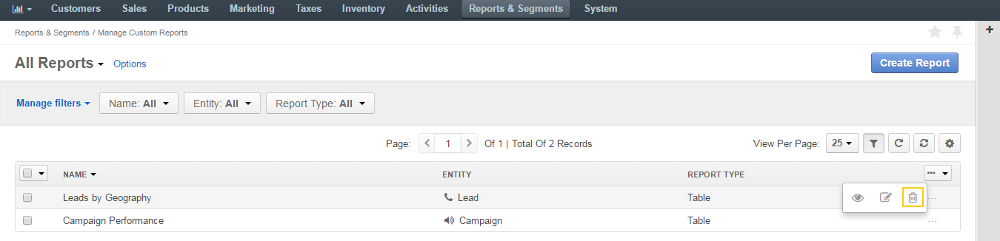In the Deletion Confirmation dialog box, click Yes, Delete.
Alternatively, you can delete a custom report from the reports view page by clicking Delete in the upper-right corner.
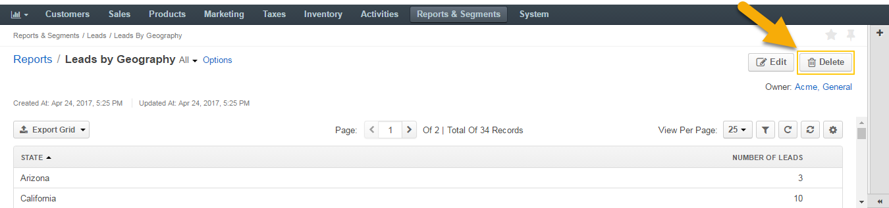You can delete multiple custom reports at a time.
Hover over the More Options menu at the end of the list header and click to delete multiple reports at a time.
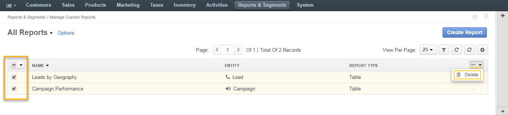Related Topics